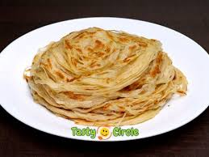

🥘 Parotta Recipe

Ingredients
- 2 cups all-purpose flour (maida)
- 1 tsp sugar
- 1/2 tsp salt
- 2 tbsp oil or ghee
- Water (as needed to make dough)
- Additional oil/ghee for cooking
Instructions
- Mix flour, sugar, salt, and oil. Add water gradually and knead into a soft dough.
- Cover and rest the dough for at least 1 hour.
- Divide into equal balls. Roll each ball thinly, apply oil, and roll like a spiral.
- Flatten gently and roll again into a disc.
- Cook on a hot tawa with oil or ghee until golden spots appear.
- Fluff the parotta by clapping or gently crushing between hands to reveal layers.
Serve With
- Chettinad Chicken
- Kurma
- Salna or Gravy
🌀 Tip: Resting the dough well and using oil generously helps achieve flaky layers.